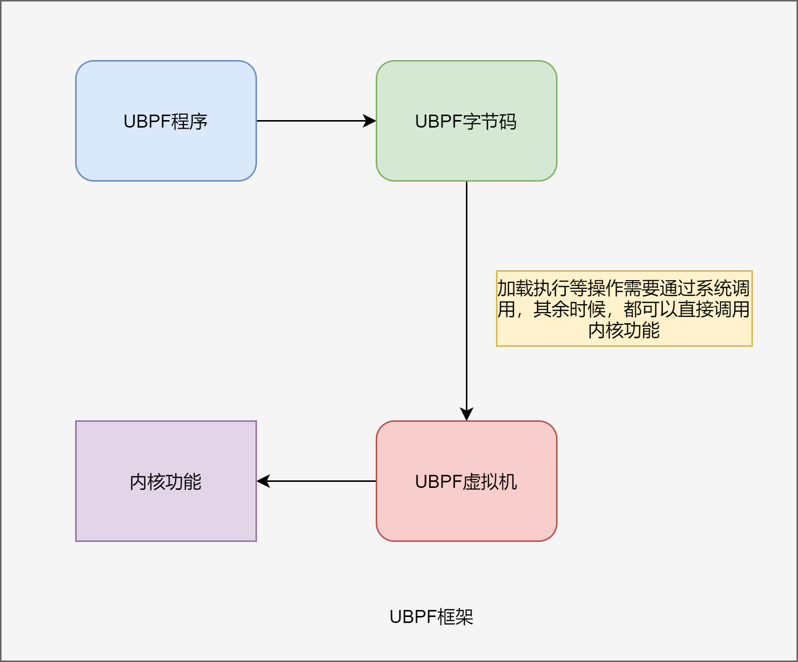

UBPF
描述
UBPF 即 User Berkeley Packet Filter，其思想是参考 Linux 内核的 EBPF 机制，内核实现字节码，加载用户态的字节码程序并运行。
由于 EBPF 限制比较多，不是图灵完备的：即不允许有循环（正在进行的工作是支持有界循环），
所以每个 eBPF 程序都需要保证完成而不会被挂起、所有的内存访问都是有界和类型检查的（包括寄存器，
一个 MOV 指令可以改变一个寄存器的类型）、不能包含空解引用、一个程序必须最多拥有 BPF_MAXINSNS 指令（默认 4096）、
“主"函数需要一个参数（context）等等。
于是，UBPF 会更像 JVM 这种是单纯的虚拟机，因此，是可以在用户态编写程序，编译成字节码，然后通过内核的 UBPF 虚拟机进行运行。
那么，对于服务程序和驱动来说，就可以使用直接调用内核的功能，免去了系统调用，并且，该程序的崩溃只会导致执行该程序的虚拟机崩溃，
而不会影响到内核。如果虚拟机支持 NATIVE 模式，就可以直接通过机器码运行，其性能将会大大提高！
